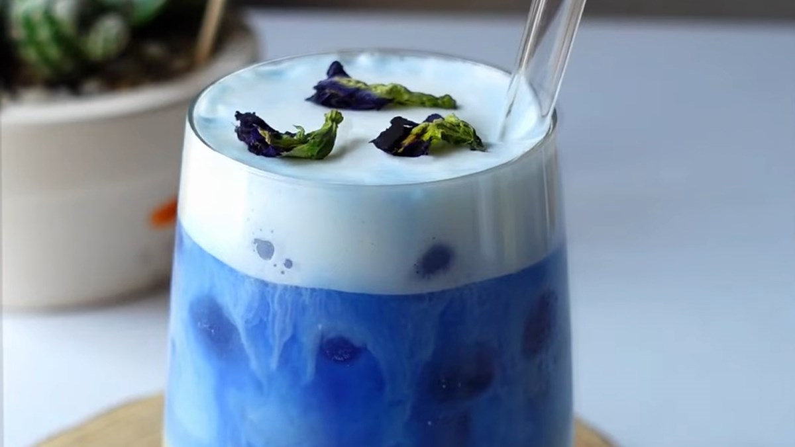
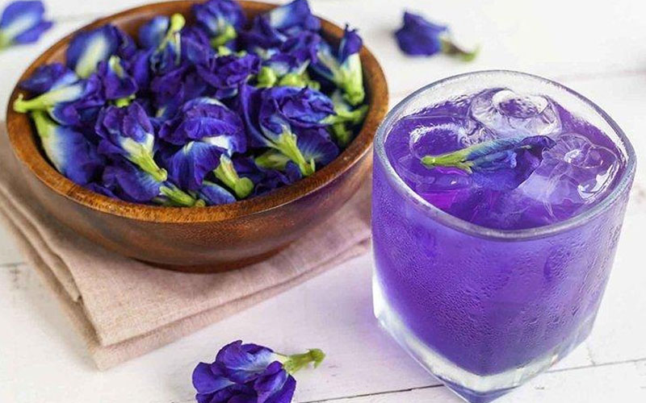
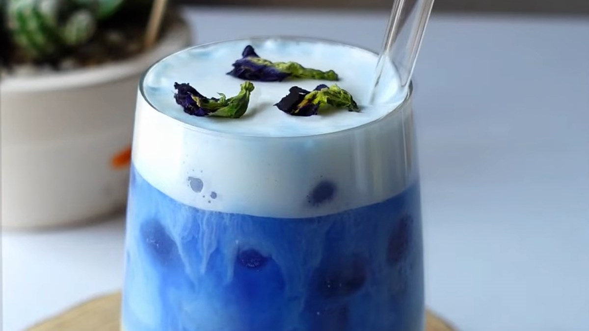
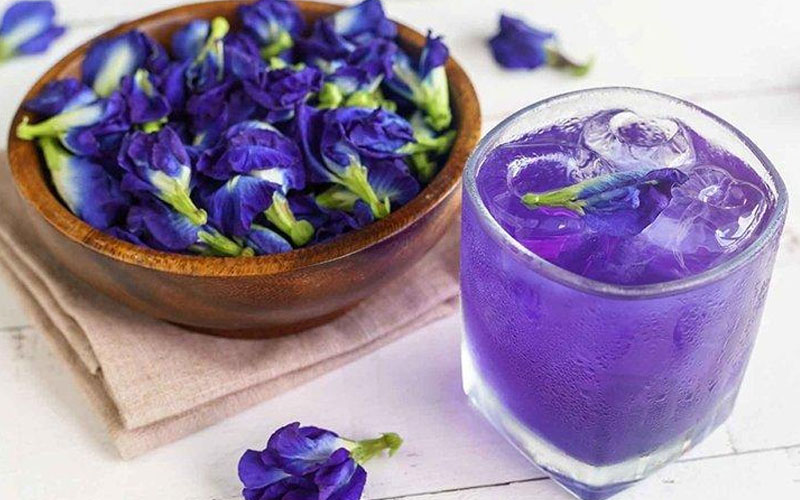

Trà Hoa Đậu Biếc
Trà Hoa Đậu Biếc là thức uống mát lạnh với sắc xanh tím mộng mơ, không chỉ gây ấn tượng bởi vẻ đẹp tự nhiên mà còn mang lại nhiều lợi ích cho sức khỏe. Thức uống này giúp thư giãn tinh thần, cải thiện thị lực và làm đẹp da, rất được ưa chuộng trong những ngày hè nóng bức. Điều đặc biệt là khả năng đổi màu kỳ diệu khi kết hợp với các nguyên liệu có tính axit như chanh.
 



Nguyên liệu
- Hoa đậu biếc khô: 5–7 bông (hoặc 1-2g hoa tươi). (Hoa đậu biếc là thành phần chính tạo màu sắc và hương vị đặc trưng).
- Nước sôi: 200ml (nước nóng khoảng 90-100°C để hoa ra màu tốt nhất).
- Mật ong hoặc đường: 1–2 thìa cà phê (tùy khẩu vị, điều chỉnh độ ngọt).
- Nước cốt chanh tươi: 1/2 - 1 thìa cà phê (tùy chọn, để tạo hiệu ứng đổi màu từ xanh tím sang tím hồng).
- Đá viên: Đủ dùng.
- Lá bạc hà hoặc lát chanh: Để trang trí (tùy chọn).
Cách làm
-
Bước 1: Ngâm hoa đậu biếc
- Cho 5-7 bông hoa đậu biếc khô vào ly hoặc bình thủy tinh.
- Rót 200ml nước sôi vào, đậy nắp và ngâm khoảng 5-7 phút. Hoa đậu biếc sẽ từ từ nhả màu, tạo ra nước trà có màu xanh tím đẹp mắt.
-
Bước 2: Lọc trà và thêm vị
- Sau khi hoa đã ra hết màu, dùng rây lọc bỏ bã hoa, giữ lại phần nước trà màu xanh tím trong.
- Thêm 1-2 thìa cà phê mật ong hoặc đường vào nước trà, khuấy đều cho tan hoàn toàn. Điều chỉnh độ ngọt theo khẩu vị cá nhân.
-
Bước 3: Tạo hiệu ứng đổi màu (tùy chọn)
- Nếu muốn tạo hiệu ứng đổi màu, bạn có thể thêm từ từ 1/2 - 1 thìa cà phê nước cốt chanh tươi vào ly trà. Quan sát màu sắc của trà sẽ chuyển dần từ xanh tím sang tím hồng hoặc tím đỏ rất đẹp mắt.
-
Bước 4: Thưởng thức
- Cho đá viên đầy ly.
- Rót trà hoa đậu biếc đã pha vào ly đá.
- Trang trí thêm một lát chanh hoặc vài lá bạc hà tươi trên miệng ly để tăng tính thẩm mỹ.
- Thưởng thức trà hoa đậu biếc ngay khi còn lạnh để cảm nhận trọn vẹn hương vị thanh mát và vẻ đẹp của màu sắc.
Mẹo nhỏ để Trà Hoa Đậu Biếc ngon hơn:
- Chọn hoa đậu biếc: Chọn hoa đậu biếc khô có màu sắc đậm, không bị ẩm mốc để đảm bảo chất lượng và màu sắc trà đẹp.
- Nhiệt độ nước: Dùng nước sôi nóng (khoảng 90-100°C) để hoa ra màu tốt nhất.
- Thời gian ngâm: Không ngâm hoa quá lâu (quá 10 phút) có thể làm trà có vị hơi hăng.
- Điều chỉnh độ ngọt: Tùy theo sở thích, bạn có thể dùng đường, mật ong, hoặc thậm chí là syrup đường phèn để tạo ngọt.
- Hiệu ứng đổi màu: Lượng nước cốt chanh sẽ quyết định độ đậm nhạt của màu tím. Thêm từ từ và quan sát để có màu sắc ưng ý.
- Kết hợp: Trà hoa đậu biếc có thể kết hợp với sữa tươi, sữa đặc để tạo thành trà sữa hoa đậu biếc, hoặc pha cùng các loại trái cây khác để có hương vị đa dạng hơn.
- Làm lạnh: Để trà mát lạnh hơn, bạn có thể làm lạnh nước trà sau khi pha trước khi cho đá viên vào.
▶️ Xem video hướng dẫn chi tiết
← Quay lại trang chủ
Bình luận và Đánh giá
Đánh giá của bạn
Chưa có bình luận nào.